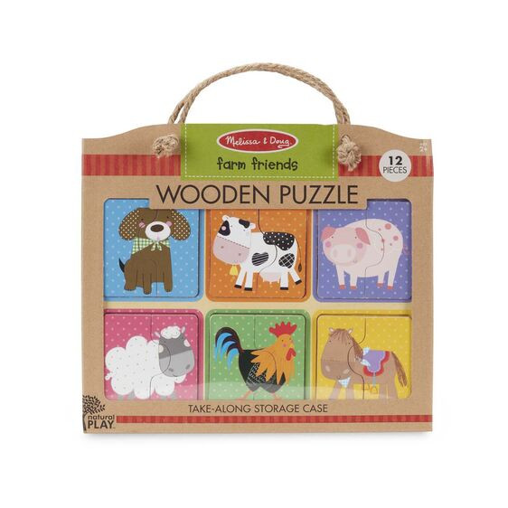
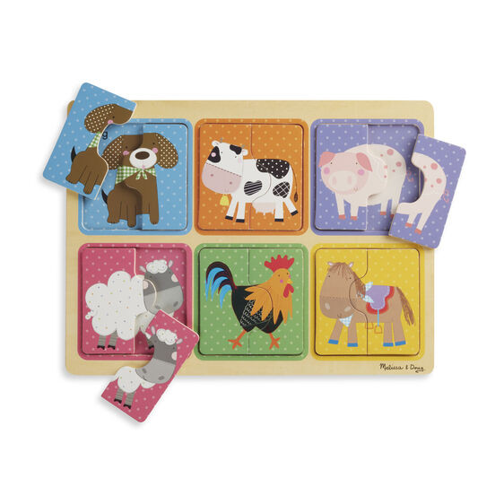
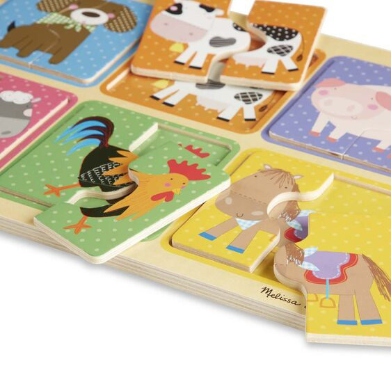

Available
Wooden Puzzle - Farm Friends
Puzzles
R3006 2-piece wooden puzzles with a farm animal theme; animals include dog, cow, pig, sheep, chicken, and horse Match pieces to pictures to complete the scenes in the puzzle board wells Puzzle board and pieces store a handy, take-along case with woven rope handles Natural Play puzzles use recycled materials and soy-based inks Makes a great gift for toddlers and preschoolers, ages 2 to 4, for hands-on, screen-free play 11.75
Enquire about this product

Wooden Puzzle - Farm Friends at Kids Corner KZN
Wooden Puzzle - Farm Friends is part of our Puzzles collection. Kids Corner KZN stocks toys for learning, pretend play, creative play, gifting and everyday childhood discovery in South Africa.
Browse more Puzzles toys